In the notation announced at the end of the previous section, control systems that we want to study take the form
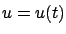
. The control set
We want to know that for every choice of the initial data
 and every admissible control
and every admissible control  , the
system (3.18) has a unique solution
, the
system (3.18) has a unique solution  on
some time interval
on
some time interval  . If this property holds, we will
say that the system is well posed.
To guarantee local existence and uniqueness
of solutions for (3.18), we need to impose some regularity
conditions on the right-hand side
. If this property holds, we will
say that the system is well posed.
To guarantee local existence and uniqueness
of solutions for (3.18), we need to impose some regularity
conditions on the right-hand side  and on the admissible controls
and on the admissible controls  .
For the sake of simplicity, we will usually
be willing to make slightly stronger assumptions than necessary; when we do this,
we will briefly indicate how our assumptions can be relaxed.
.
For the sake of simplicity, we will usually
be willing to make slightly stronger assumptions than necessary; when we do this,
we will briefly indicate how our assumptions can be relaxed.
Let us first consider the case of no controls:
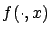
to be piecewise continuous for each fixed
Second, we need to specify how regular  should be with respect to
should be with respect to  .
A standard assumption in this regard is that
.
A standard assumption in this regard is that
 is locally
Lipschitz in
is locally
Lipschitz in  , uniformly over
, uniformly over  . Namely, for every
. Namely, for every  there should exist a constant
there should exist a constant  such that we have
such that we have
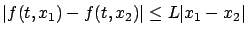
for all
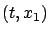
and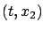
in some neighborhood of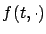
is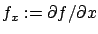
to the vector case, so that
If  satisfies the above regularity assumptions,
then on some interval
satisfies the above regularity assumptions,
then on some interval  there exists a unique solution
there exists a unique solution
 of the system (3.19). Since we did not assume that
of the system (3.19). Since we did not assume that
 is continuous with respect to
is continuous with respect to  , some care is needed in interpreting
what we mean by a solution of (3.19). In the present situation,
it is reasonable to call a function
, some care is needed in interpreting
what we mean by a solution of (3.19). In the present situation,
it is reasonable to call a function
 a solution of (3.19) if it
is continuous everywhere,
a solution of (3.19) if it
is continuous everywhere,
 almost everywhere, and satisfies the corresponding integral equation
almost everywhere, and satisfies the corresponding integral equation
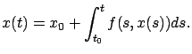
A function
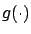
, and thus automatically satisfies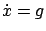
almost everywhere, is called absolutely continuous. This class of functions generalizes the piecewise
We are now ready to go back to the control system (3.18).
To guarantee local existence and uniqueness of its solutions, we can impose
assumptions on  and
and  that would let us invoke the previous existence and
uniqueness result for the right-hand side
that would let us invoke the previous existence and
uniqueness result for the right-hand side
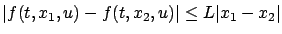
for all
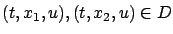
. Note that in either case, differentiability of

When the right-hand side does not explicitly depend on time, i.e., when
we have  , a convenient way to guarantee that the above conditions
hold is to assume that
, a convenient way to guarantee that the above conditions
hold is to assume that  is locally Lipschitz (as a function from
is locally Lipschitz (as a function from
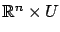
to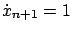
. Note that in order for the new system obtained in this way to satisfy our conditions for existence and uniqueness of solutions, continuity of
On the other hand, as far as regularity of  with
respect to
with
respect to  is concerned, it would be too restrictive to assume
anything stronger than piecewise continuity.
In fact, occasionally we may even want to relax this assumption and
allow
is concerned, it would be too restrictive to assume
anything stronger than piecewise continuity.
In fact, occasionally we may even want to relax this assumption and
allow  to be a locally bounded function with countably many
discontinuities. More precisely, the class of admissible
controls can be defined to consist of functions
to be a locally bounded function with countably many
discontinuities. More precisely, the class of admissible
controls can be defined to consist of functions
 that are measurable3.2 and locally
bounded. In view of the remarks made earlier about
the system (3.19), local existence and uniqueness of solutions is
still guaranteed for this larger class
of controls.
We will rarely need this level of generality, and piecewise continuous controls will be adequate for most of our
purposes (with the exception of some of the material to be
discussed in Sections 4.4
and 4.5--specifically, Fuller's problem
and Filippov's theorem). Similarly to the case of the
system (3.19), by a solution of (3.18) we
mean an absolutely continuous function
that are measurable3.2 and locally
bounded. In view of the remarks made earlier about
the system (3.19), local existence and uniqueness of solutions is
still guaranteed for this larger class
of controls.
We will rarely need this level of generality, and piecewise continuous controls will be adequate for most of our
purposes (with the exception of some of the material to be
discussed in Sections 4.4
and 4.5--specifically, Fuller's problem
and Filippov's theorem). Similarly to the case of the
system (3.19), by a solution of (3.18) we
mean an absolutely continuous function  satisfying
satisfying
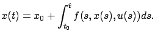
In what follows, we will always assume that the property of local existence and uniqueness of solutions holds for a given control system. This of course does not guarantee that solutions exist globally in time. Typically, we will consider a candidate optimal trajectory defined on some time interval
 , and then existence over the same time interval will be automatically ensured for nearby trajectories.
, and then existence over the same time interval will be automatically ensured for nearby trajectories.